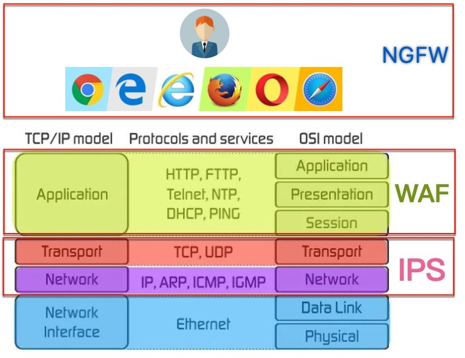

WAF
WAF=Web Application Firewall=网络应用防火墙
- 是什么：
AF=应用防火墙的一种，用于过滤、监控、阻止来自和去向Web服务的（有害的）HTTP流量
- 具体形式：WAF不拘泥于形式，可以是
- 背景：针对应用发起的攻击成为造成网络漏洞的主要原因
- 作用：WAF帮你拦截一系列企图通过入侵系统来泄漏数据的攻击
- 目的：保护Web应用免受各类应用层攻击
- 比如SQL注入、XSS、文件包含、cookie中毒、不当的系统配置等
- 历史
- WAF产品
Perfecto的AppShield：主要用于电商ModSecurity：开源项目
- 先：基于
WAS TC去制定保护规则
WAS TC=OASIS Web Application Security Technical Committee
- 后：基于
OWASP的Top 10去制定规则
OWASP=Open Web Application Security Project
- 侧重防信用卡诈骗
- 相关标准
PCI DSS=Payment Card Industry Data Security Standard
- 现状
- Web应用已成攻击者首要目标
- 以硬件设备形式实现的传统WAF不足以提供全面的应用控制和可见性
- 基于云的新时代WAF可以提供足够的Web防护
- 工作原理
- WAF通过过滤、监控和拦截恶意
HTTP或HTTPS流量对Web应用的访问来保护您的Web应用，并能够阻止未经授权的数据离开应用
- 为此，WAF需要遵守一套
策略=policy，帮助其确定哪些流量是恶意的，哪些流量是安全的
- WAF的操作方式与代理服务器类似，虽然同为“中介”，但后者旨在保护客户端身份，前者却被称为反向代理，因为其使命在于保护 Web 应用服务器免受潜在恶意客户端的影响
- 策略可定制，以满足您对Web应用或Web应用组合的独特需求。虽然许多WAF要求您定期更新策略以解决新的漏洞，但机器学习的进步使一些WAF能够自动更新。随着威胁环境愈发复杂和不确定，这种自动化变得越来越重要
- 注意
- WAF并不是最终的完整的安全方案，一般搭配其他安全相关系统一起使用，比如
网络防火墙=Network Firewall、IPS=Intrusion Prevention System=入侵防护系统，以打造一套完整的安全防护体系
- 部署方式
- 基于云 + 完全托管即服务
- 如果您需要以最快、最便捷的方式将WAF引入您的应用（特别是在您的内部安全或IT资源有限的情况下），这是一个很好的选择。
- 基于云 + 自我管理
- 获享基于云的完整灵活性和安全策略的可移植性，同时仍然保留对流量管理和安全策略设置的可控性。
- 基于云 + 自动配置
- 开启最简单的云端WAF使用方式，并能够以一种轻松、经济的方式部署安全策略。
- 内部 Advanced WAF（虚拟或硬件设备）
- 满足最苛刻的部署要求，一次解决灵活性、性能和更高级的安全问题等多项核心任务
对比
WAF vs IPS vs NGFW
WAF vs IPS vs NGFW
- 名词
WAF=Web应用防火墙IPS=入侵防御系统NGFW=下一代防火墙
- 区别
- 概述
- 
IPS：侧重协议传输层（OSI的3、4层）WAF：侧重应用层（OSI的5、6、7层）NGFW：侧重Web应用（浏览器、邮件、SaaS等）
- 详解
- IPS 是一款目标范围更加广泛的安全产品
- IPS 通常以签名和策略为基础
- 换言之，它可以根据签名数据库和既定策略，检查众所周知的漏洞和攻击载体
- IPS 根据数据库和策略建立一个标准，然后会在流量偏离标准时发出警报
- 随着时间的推移，新漏洞层出不穷，签名和策略也会积少成多
- 一般来说，IPS 保护对象是一系列协议类型的流量，例如 DNS、SMTP、TELNET、RDP、SSH 和 FTP
- 通常情况下，IPS 会运行于第 3 层和第 4 层并对其提供保护，相较于网络层和会话层，对应用层（第 7 层）提供的保护力度着实有限
- WAF的设计则专为保护应用层而生
- 旨在分析应用层上各 HTTP 或 HTTPS 请求
- 它通常会感知用户、会话和应用，了解其背后的 Web 应用及其提供的服务
- 正因如此，WAF 可以看作是用户和应用之间的中介，并会提前对往来于两者之前的通信进行分析
- 传统的 WAF 确保仅执行允许的操作（基于安全策略）
- 对于许多组织来说，WAF 是应用值得信赖的第一道防线，尤其是在抵御 OWASP 十大漏洞方面
- NGFW可以监控进入互联网的流量，覆盖网站、电子邮件账户和 SaaS
- 简单地说，它是在保护用户（相对于 Web 应用）
- NGFW 将强制执行基于用户的策略，并为安全策略添加上下文，此外还添加了 URL 过滤、防病毒或防恶意软件等功能，并有可能添加自己的IPS。WAF 是典型的反向代理（供服务器使用），而 NGFW 通常是正向代理（供浏览器等客户端使用）